Introduction
Note: This is Part I of my Future of East Asia series.
You can read Part II (Korea) and Part III (Japan) here.
I am writing this in September 2024, as the US-China competition is really starting to heat up into dangerous waters.
The 🇺🇸 2024 US Election is
coming up in a few weeks now, and Chinese President 🇨🇳 Xi Jinping is well
into his unprecedented third term in office. It seems like the upcoming 4 years (2025 - 2029) are going to be
the decisive period to determine who will claim global hegemony in the decades to come.
Xi is often compared to historical Chinese leaders such as 🇨🇳 Mao Zedong , 🇨🇳 Deng Xiaoping, or even ironically
with the 🐲 Qianlong Emperor for his nationalistic dictatorship. While such comparisons certainly make sense in one respect
or another, none of them quite had all the ingredients that describe the Xi administration.

Mao had a similar nationalistic vision, but his hardline Communist version of China was a weak and poor country that could
never play a major role on the world stage.
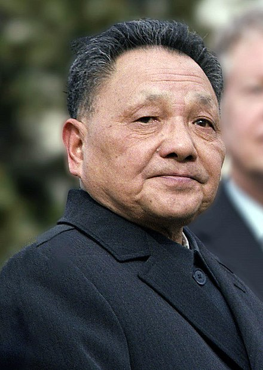
Deng led China to prosperity, but his motto was 韬光养晦 (tāo guāng yǎng huì) — "hide your strength and bide your time" —
a timid and pacifist policy that Xi would never dream of returning to.
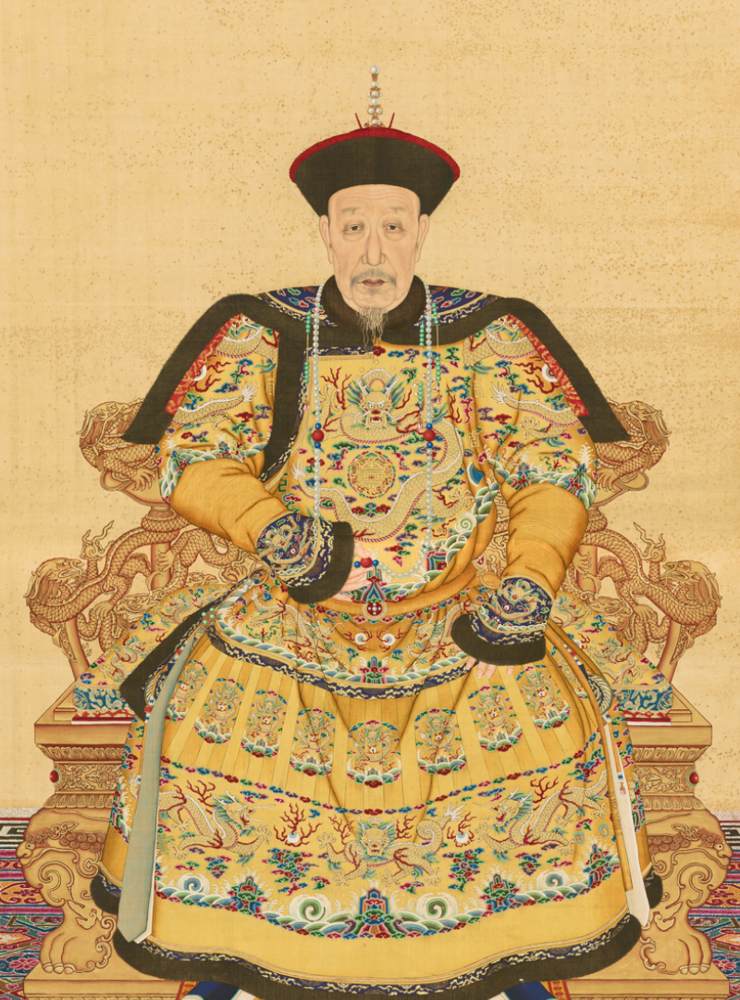
Even the emperors of old never had such global ambitions, content as they were with leading an isolated
and (in their minds) eternally superior Chinese civilization.
They simply did not have the will to lead the Chinese nation on a grand mission, despite the fact that they did actually
have the capacity to do so (see: the
👑 Ming treasure voyages).
No, to best understand Xi Jinping's China in 2024, we need to look to another country and period altogether. One in which
the forces of militant nationalism, rapid economic growth, and a hunger for expansion all coalesced under a powerful leader.
I believe that the best forerunner to Xi is in fact 🇩🇪 Otto Von Bismarck (r. 1862 - 1890), the Iron Chancellor of Germany (formerly Prussia).
Let's take a look at these two men, under a few categories:
-
🏆 Ambition
-
🧠 Ideology
-
📈 Development
-
⚔️ Unification
-
👑 Nationalism
-
💵 Crisis
-
📕 Reform
-
🎯 Expansion
In the meantime, here's a timeline to keep track of events:
Comparison
🏆 Ambition
Both men had grand visions...
Xi, the Paramount Leader
Xi Jinping has iron in his soul more than any other Chinese leader I have met.
Lee Kuan Yew, PM of Singapore
Xi presents himself as a strong leader, having risen rapidly through the ranks of the Chinese Communist Party (CCP).
Born into a privileged family — his father was a CCP elder, but was purged by Mao — he experienced both elite status and a tough childhood.
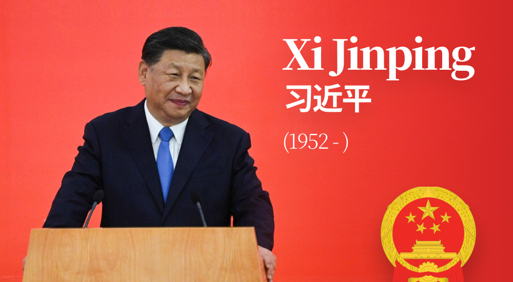
Bismarck, the Iron Chancellor
Bismarck is a man of iron will and is determined to achieve his ends.
Benjamin Disraeli, PM of Great Britain
Bismarck presented himself as a strong leader, having risen rapidly through the ranks of the Prussian legislature.
Born into a privileged family — his father was a Junker landowner, but was uninfluential — he experienced both elite status and a tough childhood.
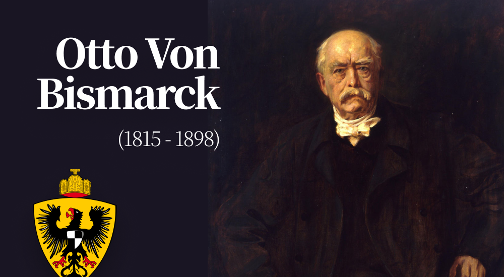
🧠 Ideology
...which they laid out in a speech.
Belt & Road Speech
The Belt and Road Initiative aims to promote connectivity of Asian, European, and African continents and their adjacent seas.
Xi Jinping, 2013
Xi Jinping espouses a strong & assertive foreign policy, seeking to claim China's rightful place on the international stage.
In this early speech, Xi rejected Western-style liberalism in favor of a powerful Chinese state that could
forge its own unique path to influence.
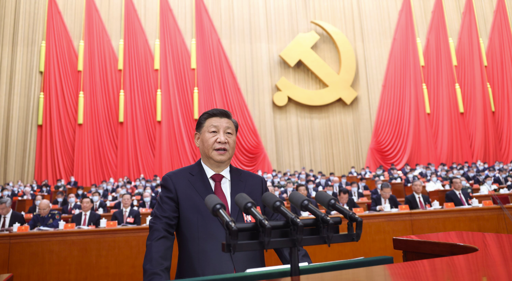
Blood & Iron Speech
The great questions of the day will not be settled by speeches and majority decisions—that was the mistake of 1848 and 1849—but by iron and blood.
Otto Von Bismarck, 1862
Bismarck espoused a strong & assertive foreign policy, seeking to claim Germany's rightful place on the international stage.
In this early speech, Bismarck rejected Western-style liberalism in favor of a powerful German state that could
forge its own unique path to influence.
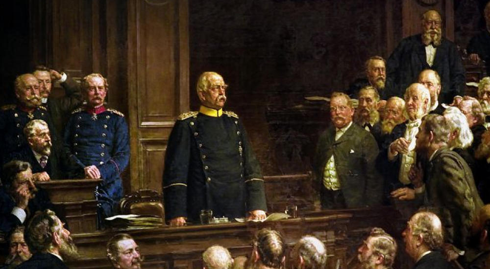
📈 Prosperity
Their nations had been rapidly growing...
Chinese Reforms (1978 -)
We must use the power of technology and industry to raise China to the level of modern nations.
Let some people get rich first, and they will pull others along.
Deng Xiaoping, Paramount Leader
The late 19th & early 20th centuries saw a 40-year period in which China
rapidly caught up to its Western rivals in industrialization,
despite having had a late start.
This economic strength would set the basis for future Chinese expansionism & influence.
German Industrialization (1835 - 1873)
The power of production is far more important than wealth itself...
National prosperity can only be achieved through a strong industrial base.
Friedrich List, Economist
The 18th century saw a 40-year period in which Germany rapidly caught up to its European rivals in industrialization,
despite having had a late start.
This economic strength would set the basis for future German expansionism & influence.
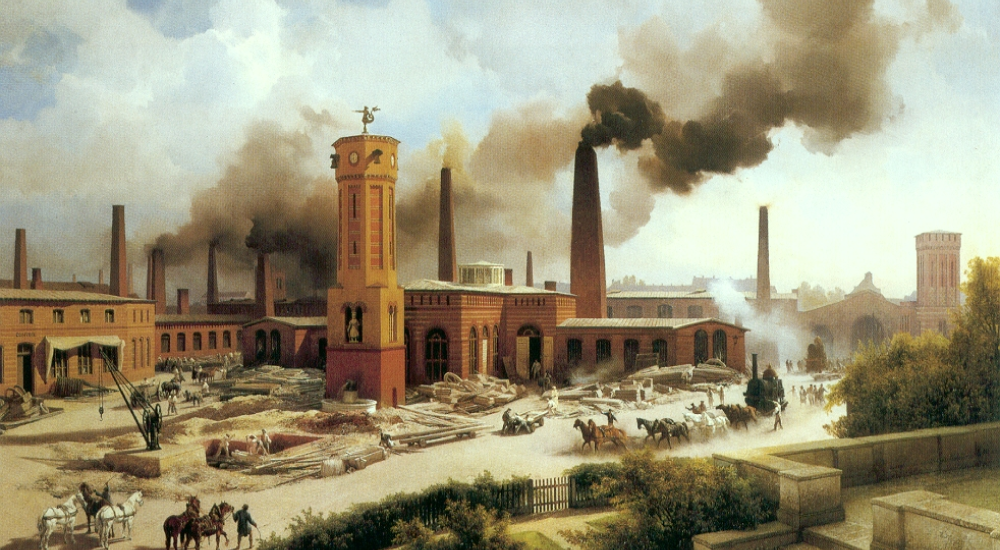
👑 Nationalism
...which led to increased pride.
Han Chauvinism
As China grows more powerful, nationalist thinkers are mythologizing the Chinese Zhonghua ("Chinese nation" or "civilization")
as a uniquely exceptional entity.
During the Xi era, we have seen the rise of 🇨🇳 Wolf Warrior Diplomacy and its emphasis on an aggressive Chinese
nation-state.
In later years, I think it's reasonable to expect a sort of Chinese-style fascism emerging on the mainland.
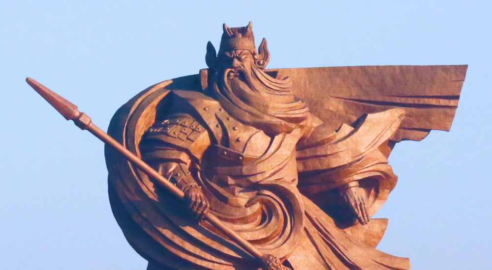
Völkisch Movement
As Germany grew more powerful, nationalist thinkers began to mythologize the GermanVolk ("folk" or "people")
as a uniquely exceptional entity.
During the Weimar era, this eventually led to the 🇩🇪 Conservative Revolution (1918 - 1933) and its
emphasis on the Christian nation-state.
In later years, this would manifest into the Nazi Party's racial propaganda.
⚔️ Unification
They both unified their nations with force...
Sinicization (2014 - )
We will build a strong sense of community for the Chinese nation, in which all ethnic groups will work closely together and contribute to the great rejuvenation of the Chinese nation.
Xi Jinping, 2019
One by one, Xi began to subjugate minorities and neighboring countries in his quest for the complete unification of China.
German Unification (1866 - 1871)
When called upon to take the leadership in Germany, we must see that nothing remains in the way of our task to accomplish the unity of the nation by all means necessary.
Otto Von Bismarck, 1866
One by one, Bismarck began to subjugate minorities and neighboring countries in his quest for the complete unification of Germany.
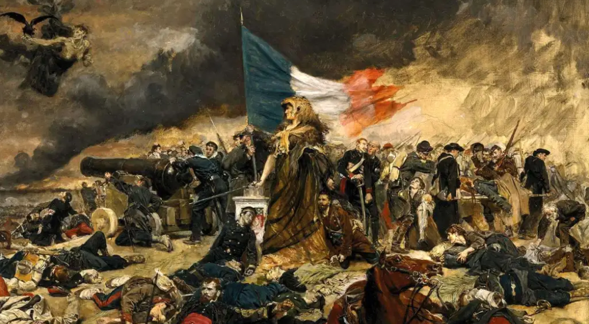
💵 Crisis
...until a major economic crisis struck.
Chinese Economic Crisis (2024 - )
11 years in Xi's rule, there was a major crisis.
China's rapid industrialization bubble suddenly popped in 2024, as the liquidation of the
🇨🇳 Evergrande Group began a Chinese economic downturn.
Many banks and financial instutitions went bankrupt, while Xi is likely going to have to spend the rest of his term
dealing with the aftershock of the crash.
However, I believe China's emphasis on developing high-tech industries is the correct way out of this crisis.
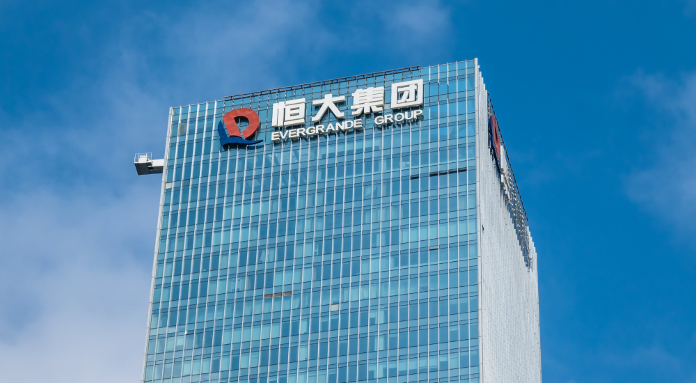
Panic of 1873 (1873 - 1879)
11 years in Bismarck's rule, there was a major crisis.
Germany's rapid industrialization bubble suddenly popped in 1873, as the crash of the
🇦🇹 Vienna Stock Exchange began a European economic downturn.
Many banks and financial instutitions went bankrupt, while Bismarck was forced to spend the rest of his term
dealing with the aftershock of the crash.
However, Germany eventually recovered – and became a world leader in high-tech industries during this time.
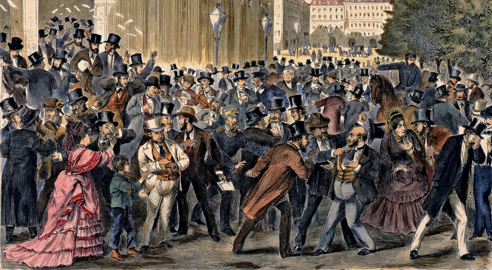
📕 Reform
They introduced new policies in response...
Reform? (TBD)
Now we're getting into the future.
As of September 2024, Xi has not yet introduced serious reforms to the Chinese welfare state.
However, as frustrations mount among the Chinese people, I predict that some sort of social safety net
will be introduced in order to secure the Party's authority.
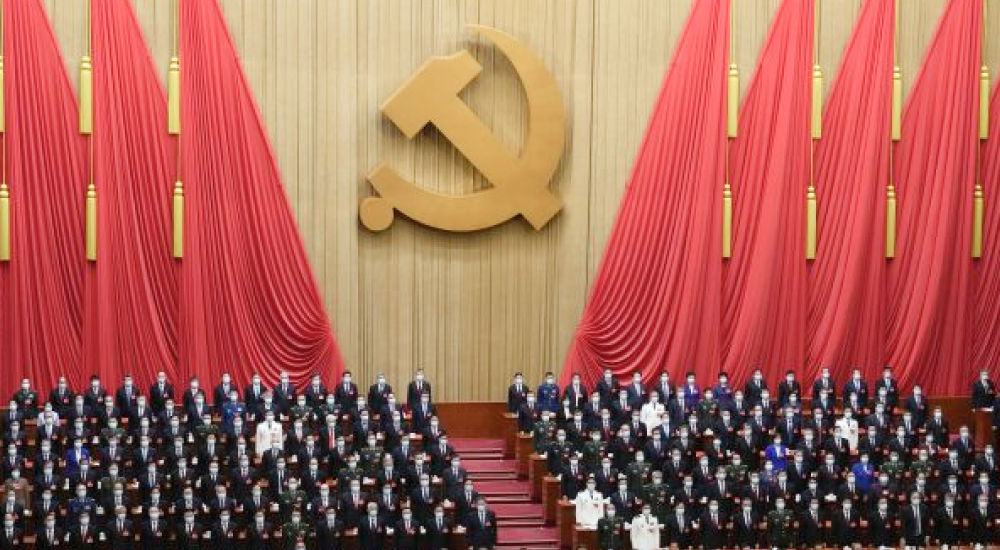
State Socialism (1883 - 1891)
Although initially reluctant, Bismarck eventually built Europe's first serious welfare state (under the banner of
🇩🇪 State Socialism)
in order to secure his own authority.
1883: The 🏥 Health Insurance Bill of 1883 was the first precursor to socialized medicine.
1889: The 🎅🏻 Old Age and Disability Insurance Bill of 1889 established an early pension system.
1891: The 🔨 Workers Protection Act of 1891 guaranteed labor rights for industrial workers.
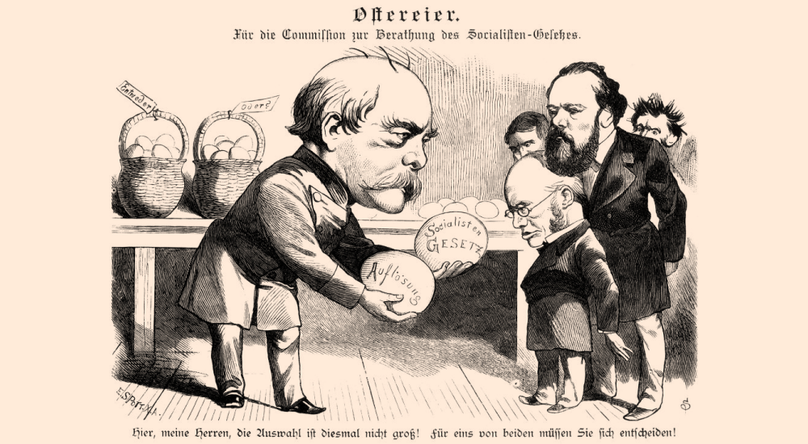
🎯 Expansion
...and expanded outwards.
Chinese Expansion? (TBD)
Again, as of September 2024, we have not yet reached this phase of history.
I believe that Chinese expansion will mainly be in the form of business and debt, rather than
a formal "empire" in the European style.
The 🌍 Belt and Road Initiative (2013 - ) is the main example of this, and we'll undoubtedly see more
as Chinese companies seek global markets.
German Imperialism (1884 - 1920)
Seeking new markets and global influence, Bismarck officially began the the
👑 German Colonial Empire
along with the other European powers.
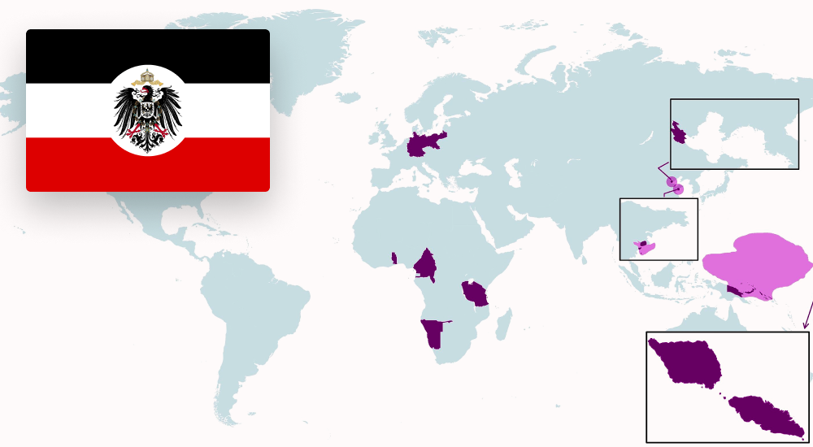
Timeline
That was a lot of information to digest — to make things easier, let's bring back that timeline we saw at the beginning of the article.
One thing to notice is just how precisely the years line up with each other, to the point in which
I feel confident in making very specific predictions about what's to come.
My Predictions
Of course, one of the benefits of historical literacy is that it allows us to see parallels to our present-day lives.
So with all of that being said, I would like to make 3 predictions about the future of Europe over the next 25 years.
Some of these events are already starting to materialize, but I've taken the liberty to weave them together into a grand narrative for us to follow.
1) 💴 XiJinpingCareTM
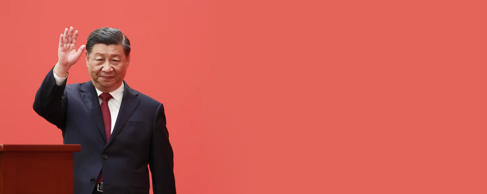
When the Panic of 1873 hit Germany, the 🌹 Social Democratic Party was formed to push for workers' rights and compensation.
Bismarck initially suppressed the SPD with the 🇩🇪 Anti-Socialist Laws — only to eventually realize that the German people's frustration
could not be contained, and shifted to actually introduce 🇩🇪 State Socialism policies in order to protect his authority.
🔮 I predict that the Chinese Communist Party (CCP) will introduce a series of welfare reforms & social safety nets in order to stabilize society.
Xi Jinping has previously denounced what he calls "welfarism" which breeds laziness among the people. While an ironic statement to say the least, coming from the leader
of a supposed "Communist" party, this matches Bismarck's initial reluctance to introduce serious reforms.
However, as the Chinese people's frustrations begin to mount, some kind of state-sponsored relief would greatly aid the CCP's grip on authority.
2) 🇨🇳 Chinese Expansionism
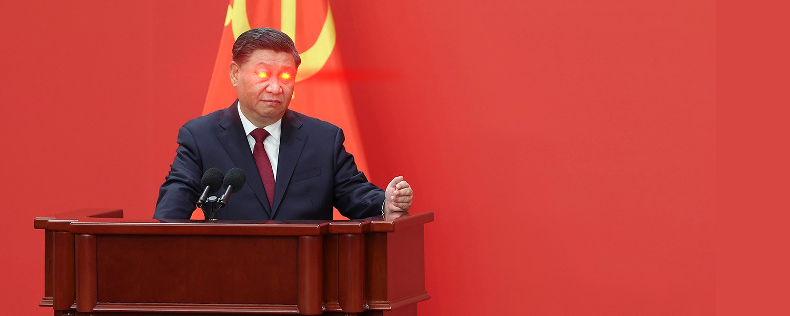
When the Panic of 1873 hit Germany, Bismarck finally decided that Germany had to expand outwards in search of new markets & political influence.
The German people were filled with nationalistic fervor, and the new government was hungry to flex its newfound strength overseas. Although existing
European powers had already taken most of the "easy" targets, Germany still managed to form the third-largest empire during that time (after Britain and France).
German expansion followed a common 3-pronged strategy:
-
🌍 Political expansion
-
🏦 Economic expansion
-
💃 Cultural expansion
✝️ Christian Missionaries
As China rises, we're going to see the CCP pushing for more overseas activity.
We're already starting to see glimpses of this, with the recent China-Africa summit highlighting just how much economic & political influence China
has over virtually the entire African continent.
Underdeveloped nations such as those in 👩🏾 Sub-Saharan Africa or 👩🏽 South Asia will be where China exercises the most overt power,
while middle-power regions such as 👩🏽 Latin America or the 👩🏻 Middle East / North Africa area will also see more Chinese influence albeit on a lesser scale.
🔮 I predict that we're going to see a sudden & rapid rise of Chinese influence globally in the political, economic, and cultural spheres.
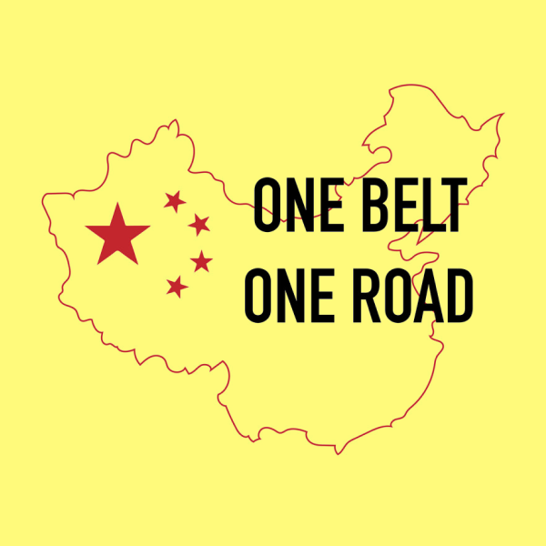
Political expansion
Countries with sign up to the BRI will inextricably link themselves to Chinese credit and policies, allowing China
to secure new markets for its finished goods
The host countries won't be able to enact high tariffs in response, since
they're too dependent on China for new loans and bailouts.
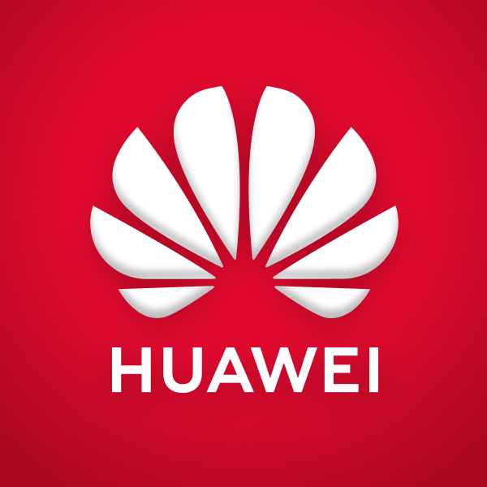
Economic expansion
As competition heats up in the Chinese market, many private corporations will be "pushed" to
international markets in order to survive.
We're already seeing the early phases of this, as companies such as
🏦 BYD,
🏦 LONGi, and
🏦 Huawei already expanding around the world.
🏯 Chinese Wave?
Cultural expansion
Similar to the 🇰🇷 Korean Wave and
🇯🇵 Japanophilia, it's reasonable to expect a similar spread of
Chinese popular culture as its economic status grows as well.
However, this may be mostly limited to non-Western audiences due to the political tensions between China and the West.
Let's see what the future holds.
3) 🤖 Chinese Technological Renaissance
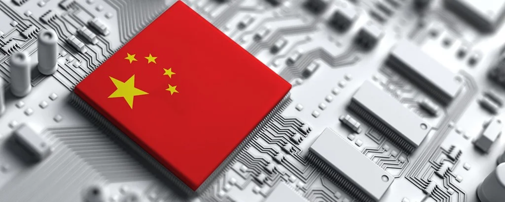
Immediately after unification, Germany began an incredible 50-year run of producing the world's best scientists, engineers, and inventors.
Although the "German-dominated world" that doomsayers prophesied ultimately did not come true in the end, the period following
🇩🇪 unification (1871) to the outbreak of
💣 World War I (1914) firmly cemented
Germany's place as a major player in Europe in a way that it had simply not been before.
Many of these new industries still form the foundation of Germany's economy, and is why "Made in Germany" has such a premium
and high-quality connotation as it does around the world.
-
🧬 Science
-
🧠 Engineering
-
⚙️ Manufacturing
We're seeing similar developments now, mostly with the rise of advanced Artificial Intelligence systems.
🇺🇸 America and 🇨🇳 China will obviously be the major players in this race, but I don't think we should discount the potential roles
of countries like 🇰🇷 South Korea, 🇹🇼 Taiwan, or 🇸🇬 Singapore either. All of these nations are facing demographic crises and low birthrates, which may force
innovation on the robotics / AI side in order to replenish the shrinking labor force.
🔮 I predict that the East Asians / Americans will lead a new renaissance of technological invention & discovery, primarily led by the US-China competition.
🤖 Humanoid Robots
Manufacturing
This is still a new industry, but China is the most serious country when it comes to manufacturing humanoid robots.
Companies such as Unitree ,
UBTech , and
Siasun are already starting to produce
new robot models at a rapid scale, and I think it's reasonable to expect a massive explosion in 2025.
Final Words
China is still the future for now, even though it's facing big problems at the moment.
As we all know, Germany never quite achieved its 20th-century dream of displacing Anglo-American hegemony to become the world's dominant power.
The grand world-conquering visions of 🤴🏻 Wilhelm II (r. 1888 - 1918) and
👨🏻 Adolf Hitler (r. 1933 - 1945) both ultimately failed,
leaving Germany relegated to being a continental land nation, rather than a world superpower.
However, Bismarck's greatest achievement — the unification and industrialization of the modern German state — still goes down in history as
one of the most significant events of the 19th century.
Germany is still the most powerful nation in the EU, the de facto leader of the European continent, and the 3rd or 4th largest economy in the world.
Bismarck's dream of a powerful Germany continues to live on, even though not quite in the form that he may have imagined.
As of late 2024, all signs indicate that Chairman Xi's China will follow a similar path.
China will likely never completely replace the United States in terms of global influence, nor is it obvious that this is what the CCP leadership
even truly wants. America's overwhelming geographical advantage aside, I am not sure if any "Old World" power will be able to overtake the US
anytime in the next few decades.
However, Xi's greatest achievenment — the unification and industrialization of the modern Chinese state — is bound to
go down as perhaps the most significant event of the 21st century.
But that opens up another horrifying possibility — now that the stage is set, will we see a World War I-level catastrophic event in East Asia?
Once again, let's pray we don't live to see that far.